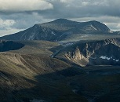
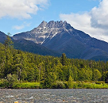

На́родная (Наро́дная) — наивысшая вершина Урала. Высота над уровнем моря 1895 метров.
Гора расположена на Приполярном Урале на границе Республики Коми и Ханты-Мансийского автономного округа,
высшая точка смещена на полкилометра от границы в сторону Ханты-Мансийского автономного округа.

Манара́га (1662 м) — вершина на Приполярном Урале.
Вершина представляет собой сильно рассеченный гребень с 5—7 огромными «жандармами».